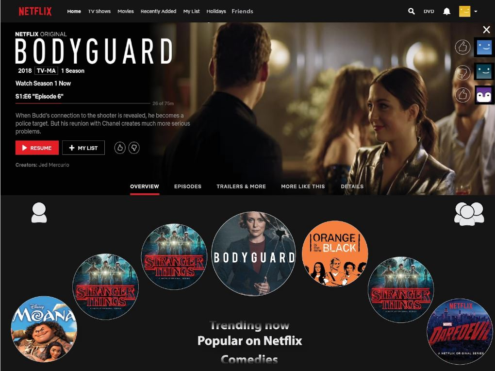

Netflix: a natural swipe for tablet
First we sketch!
Simple yet satisfying! the Idea here was to make a small change to enhance a Users natural movements with swiping on a tablet
Lets add some color
A quick research into colors of netflix and official logos
Up the Ante
Just to get something digital to work from
Fin
After user testing and simplification